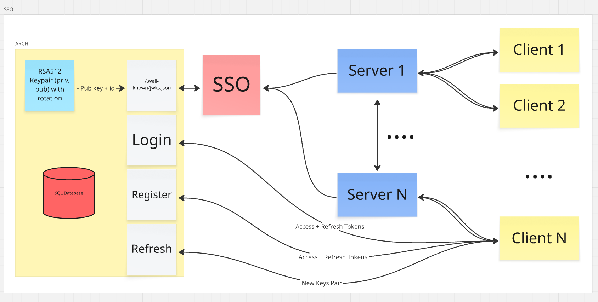
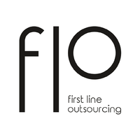

UI & State Architecture
Lighthouse: 98+
FCP < 0.8s
CLS < 0.01
Auth & Payment BPMN
Professional Experience

Fullstack Developer
Sirena AI · Oct 2025 – Oct 2026 (1 year 1 month)
Backend:
- Moved heavy workloads (data sync, AI generation, integrations) to background workers on Kafka and BullMQ — 5+ task types with automatic retries and recovery.
-
Migrated 1+ TB of data from DynamoDB and AWS S3 to ClickHouse for product analytics.
1TB+ Data
Migrated - Optimized Wildberries API integration: added rate-limit handling, retry policies, and centralized error monitoring.
- Migrated backend services from AWS Lambda (Node.js) to Python (FastAPI / Django) on VDS.
- Set up centralized production logging with Grafana Loki; refactored 10+ core modules and covered critical business logic with unit tests.
Frontend:
- Built analytical SPA dashboards and internal management pages for an AI platform using Angular 18+, TypeScript, and RxJS.
-
Implemented a unified table rendering engine with client-side Excel export for large datasets.
Fast Tables &
Excel Export - Implemented multi-filter/sorting panels synced to URL query params and UI workflows for async AI content generation.
- Set up HTTP interceptors (JWT auto-refresh, unified error handling), RBAC route guards, and adopted Angular Signals & Standalone Components.
- Reduced initial page load time and browser RAM usage on heavy analytical tables; refined Figma edge cases with designers.

Fullstack Developer
First Line Outsourcing (FLO), Krasnodar · Apr 2024 – Jul 2025 (1 year 4 months)
 Core Project — HappyHero (Mental Health IT):
Core Project — HappyHero (Mental Health IT):
Backend:
- Built the Node.js (NestJS) BFF backend from scratch and shipped to production in 4 months.
- Implemented 70+ REST API endpoints for web and mobile clients and designed a PostgreSQL schema with 50+ entities (TypeORM).
-
Optimized backend services to keep response latency under p95 < 100ms.
p95 < 100ms
-
Built a push notification service (RabbitMQ, FCM, APNs): 50k+ messages/day across 10+ time zones with guaranteed delivery.
50k+ Push / Day
- Implemented scheduled analytics reporting with incremental data processing, Azure OpenAI integration (plus Python RAG assistant), and Prometheus/Grafana monitoring.
Frontend (HappyHero):
- Built a Telegram Web App (TWA) from scratch in Next.js (App Router) and TypeScript for interactive psychological tests, including in-app payments.
-
Implemented responsive, touch-friendly Figma layouts adapted for mobile viewports and Telegram WebView.
Telegram WebApp
Built & Launched -
Optimized bundle size, asset caching, and WebView memory usage for smooth 60fps interaction; built a reusable typed UI component library.
Bundle & RAM
Optimized
Other Commercial Projects — Backend & Frontend:
- Shipped 5+ client products and microservices; designed PostgreSQL and MongoDB schemas.
- Integrated third-party APIs and payment gateways (including T-Bank for MDS); set up Docker, GitHub Actions CI/CD, and VPS/VDS deployments.
- Built React/Next.js SPAs and Telegram Web Apps with BFF layers, infinite-scroll virtualization, and responsive Figma layouts.

Pet Projects
Diploma Project · Collaborative Task & Team Management Platform (Kanban)
Backend:
- Built a real-time WebSocket sync service in Golang (goroutines, channels) and core auth/business API in NestJS, connected via gRPC.
Frontend:
- Built an Angular SPA with Redux, real-time bidirectional WebSocket board sync, drag-and-drop Kanban boards, and isolated workspaces.
Профессиональный опыт
Fullstack-разработчик
Сирена АИ · Окт 2025 – Окт 2026 (1 год 1 месяц)
Backend:
- Вынес тяжёлые задачи (синхронизация данных, AI-генерация, интеграции) в фоновые воркеры на Kafka и BullMQ — 5+ типов задач с автоповторами и восстановлением после сбоев.
-
Спроектировал и выполнил миграцию >1 ТБ данных из DynamoDB и AWS S3 в ClickHouse для продуктовой аналитики.
1TB+ Data
Migrated - Оптимизировал интеграцию с API Wildberries: добавил обработку rate limits, retry-политику и централизованный мониторинг ошибок.
- Перенёс backend-сервисы с AWS Lambda (Node.js) на Python (FastAPI / Django) и VDS.
- Внедрил централизованное логирование на базе Grafana Loki; провёл рефакторинг 10+ модулей и покрыл критическую бизнес-логику unit-тестами.
Frontend:
- Разрабатывал аналитический SPA-дэшборд и внутренние страницы AI-платформы на Angular 18+, TypeScript и RxJS.
-
Спроектировал и реализовал единую систему рендеринга таблиц с клиентским экспортом отчётов в Excel.
Быстрые таблицы
Экспорт в Excel - Реализовал фильтрацию/сортировку с синхронизацией в URL и интерфейс для асинхронной AI-генерации контента (статусы задач, предпросмотр, история).
- Настроил HTTP-интерсепторы (автообновление JWT, обработка ошибок), ролевой доступ (RBAC) и перевёл ключевые модули на Angular Signals и Standalone Components.
- Ускорил загрузку страниц и снизил потребление ОЗУ на тяжёлых таблицах; дорабатывал корнер-кейсы в Figma с дизайнером.
Fullstack-разработчик
First Line Outsourcing (FLO), Краснодар · Апр 2024 – Июл 2025 (1 год 4 месяца)
Основной проект — HappyHero (Mental Health IT):
Backend:
- Разработал с нуля BFF-бэкенд на Node.js (NestJS) и вывел продукт в production за 4 месяца.
- Реализовал 70+ REST API эндпоинтов для web- и mobile-клиентов, спроектировал схему БД в PostgreSQL на 50+ сущностей (TypeORM).
-
Оптимизировал работу backend-сервисов до p95 < 100 мс.
p95 < 100ms
-
Сделал рассылку push-уведомлений на RabbitMQ (FCM, APNs): >50k сообщений в сутки, учёт 10+ часовых поясов, гарантированная доставка.
50k+ Push / Day
- Реализовал генерацию аналитических отчётов по расписанию, интеграцию Azure OpenAI (плюс участие в AI-ассистенте на Python/RAG) и мониторинг на Prometheus и Grafana.
Frontend (HappyHero):
- Разработал с нуля Telegram Web App (TWA) на Next.js (App Router) и TypeScript для прохождения психологических тестов, интегрировал онлайн-оплату внутри TWA.
- Сверстал адаптивный интерфейс по макетам Figma под мобильные экраны и Telegram WebView.
- Оптимизировал бандл, первую отрисовку и потребление ОЗУ в WebView (60fps); собрал библиотеку переиспользуемых типизированных UI-компонентов.
Другие коммерческие проекты — Backend и Frontend:
- Участвовал в разработке и запуске 5+ коммерческих продуктов и микросервисов; проектировал схемы БД (PostgreSQL, MongoDB).
- Интегрировал внешние API и платёжные шлюзы (включая Т-Банк для MDS); настраивал Docker, GitHub Actions CI/CD и деплой на VPS/VDS.
- Разрабатывал SPA и Telegram Web Apps на React/Next.js с BFF-слоем, виртуализацией бесконечных лент и адаптивной вёрсткой по Figma.
Пет-проекты
Дипломный проект — Платформа для менеджмента задач и проектных команд (Kanban)
Backend:
- Реализовал WebSocket-сервис синхронизации на Golang (горутины, каналы) и основное API с авторизацией на NestJS (связь через gRPC).
Frontend:
- Разработал SPA на Angular с Redux, двусторонней синхронизацией досок по WebSockets, drag-and-drop Kanban-доской и изоляцией рабочих пространств.